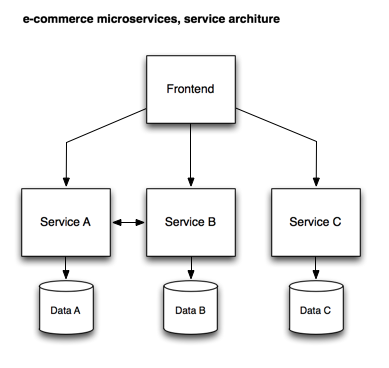

Our Example
A simple e-commerce application
The monolith
The example that we use throughout the tutorial is a simplified e-commerce application that uses a layered architecture commonly found in Java EE applications:
The desired microservice architecture
Our goal is to build a microservice architecture, that has most of the business logic broken up into several services which provide a high degree of cohesion, yet are loosely coupled so they can be released with a minimum impact on each other:
